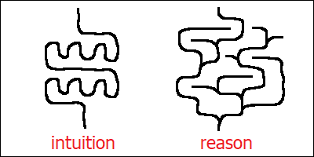

Even though Transformer architecture is impressive, it’s not enough for solving complicated problems, and it cannot, by itself, replicate human thinking. Human conscious reasoning involves some kinds of feedback and trial and error, whereas algorithms discovered by most neural networks lack either of these. “Chain of thought” models are built on top of existing neural networks, and they are examples of “slow” thinking. They might not be truly universal yet, but they do seem to capture the essence of conscious reasoning, and they achieve astonishing results. One limitation of such models is that their “intuitions” (the underlying neural networks) don’t change. Another is that a single intelligent being, even the smartest one, isn’t really enough to make an invention.
Transformer architecture is the key technology behind modern large language models (also known as “LLMs”). The last letter “T” in “ChatGPT” (the first globally successful LLM) actually stands for “Transformer”. The key difference between Transformers and their predecessors is vastly improved flexibility. They also rely on a few powerful techniques (described in the previous chapter) which are only available in digital computers and cannot be reproduced in living animal brains. Together, these traits allow Transformers to perform some kinds of very complex processing very easily, without relying on time-consuming and unpredictable techniques like trial and error.
Transformers, similar to most other neural networks, work more like a “pipe”. You throw some data in, it travels through the pipe, and then some other piece of data comes out. The actual travel path might be convoluted, with all these numerous “attention mechanism” blocks on the way, but it’s known in advance. The same applies to human intuition. You throw a question in (which might as well be some unconscious sensory experience), and you get the answer out, within a predictable amount of time. On the other hand, human conscious reasoning is more like a labyrinth. It contains a lot of paths, and some of them are better than the others. It doesn’t always have a way out, and even if it does, you might get stuck in there for an indefinite amount of time. When entering a labyrinth, you never know what happens next.
The reason why most artificial neural networks behave more like a single “pipe” rather than a tree of possibilities might probably be related to the fact that they are modeled as mathematical functions, differentiable by every parameter. It looks like all these mathematical optimization methods and other algorithms, like backpropagation and gradient descent, don’t really work that well when the algorithm being optimized cannot be represented as a reasonably straightforward sequence of steps. In order for an algorithm to be discoverable by a neural network, it has to be learnable from experience, and this fact severely limits the range of available algorithms (and architectures). And the same requirement (automatic discoverability from repeated experience alone) might similarly explain the limited nature of our human intuitions.
Up until as late as middle 2024, I used to believe that simulating human conscious reasoning would be a difficult task. Because it’s so much different and so much more complicated than intuition, and also because it’s conscious. We still have no idea what consciousness really is, why is it needed in the first place and how it works. My current intuition, however, would be instead that consciousness is somehow related to memory (not to the long-term memory which is stored in connections between the neurons and might probably be updated during sleep, but to some other kind of memory which we rely upon during the day). It’s a totally wild intuition, and I don’t claim it to be true (and I don’t even know how this type of memory should be properly called). It might explain though why not every neural activity in our brain is conscious. In my current opinion, consciousness has nothing to do with intelligence. Most of our intelligence is intuitive, and we are completely unaware of what’s happening under the hood.
Leaving intuitive processing aside, conscious reasoning seems to mostly amount to trial and error. Trying different approaches until one of them works is what we do when dealing with an unfamiliar mathematical problem. That’s what Archimedes did when he looked at every object around in search for anything that might be of help for measuring the volume of the crown (until he sat into the bath). Conscious reasoning also involves comparing the results provided by our different kinds of intuitions with each other. In fact, it’s known that consciousness only arises when different regions of the brain are working simultaneously and become in some way connected together. And intuitions, on the other hand, are the shortcuts which help us assess whether a given approach is going to work or not before even trying. Without good intuitions, our search would take ages to finish. With intuitions alone, there wouldn’t be any search in the first place.
Reading a book also counts as a conscious reasoning activity (in humans, at least). Which is why you can’t be reading a book and solving a math problem at the same time. It’s not clear to me why exactly reading a book should require conscious activity. Maybe that’s because it involves memory (and memory recall, in some extreme cases at least, might well resemble “trial and error” in humans). Or maybe the task of processing language is so complex in itself (in humans at least) that it cannot be done without engaging a lot of different independent submodules within the brain. In any case, Transformer architecture doesn’t have this limitation. Transformer-based neural networks can handle reading a book (and making sense of it) by means of “fast thinking” alone. And this brings us to an interesting situation. Which is, we tend to hugely overestimate and hugely underestimate true potential of these neural networks at the same time.
A typical bare (“non-thinking”) large language model cannot handle trial and error. And without trial and error, it cannot do a lot. But it’s still capable of handling language. And since we humans know intuitively that language processing is “hard”, and since we also see that this model can do it so effortlessly, it gives us an impression that it should therefore be omnipotent. It’s not. But on the other hand, since we are not necessarily aware that this model’s language processing is merely intuitive, we tend to compare its quality with what we humans can do. And then we quickly start to complain about all these inaccuracies and logical errors in the model’s “thinking”. What we don’t realize though, is that these models haven’t even started to think. And that’s what makes them truly amazing.
In any case, it turns out that simulating conscious reasoning wigh large language models isn’t that difficult either. One of the easiest ways of implementing this relies on the fact that large language models aren’t actually truly deterministic. They have a tiny extra random step added on top of the underlying neural network manually by humans. And it leads to our models’ giving different answers every time, even with identical input (and in spite of the fact that the underlying neural network algorithm itself is in fact perfectly predictable).
This means that if you ask a model to solve the same problem a few times in a row, it will produce a slightly different output every time. And some of these outputs might be better than others. That’s what I call “noise”. And then, after having all these outputs already printed out (and stored in the model’s “context”), the model might be able to compare them and decide (intuitively) which of the generated solutions better suits the original goal. Which is what I call the “filter”. And this “filter” is intelligent, I should say. This is how the most primitive “chain of thought” language model would look like.
There are also other ways of implementing this. Some of the most successful (and famous) neural networks have actually been “hybrid” in design. By which I mean that they consist of an “intuitive” neural network core with a “trial and error” algorithm, written manually by humans, added on top of it. One example would be AlphaGo, the model which overcame humans in the game of Go, popular in East Asia (and considered to be much more difficult than chess). Another example is AlphaGeometry, which is known for its great results in mathematics. It looks like combining “intuition” with “trial and error” actually works.
I’m not really sure how exactly modern “chain of thought” models are implemented. To my best knowledge, they are not “pure” neural networks. They all include some extra algorithms added on top of the underlying “intuitive core”. These models have become much more universal though, in the sense that they are able to apply the same “trial and error” algorithm to a wide variety of tasks across different knowledge domains. These models (which they also call “thinking” models) take much longer time to finish their work on a given task, and their run time is not predictable either. They may try to solve many different “helper” problems and explore many different approaches in order to tackle the bigger one. And they will discard most of the intermediate results obtained from these “helper” steps (just like human scientists do). Such models are slow (and expensive). They can do things, however, which “pure” neural networks have never been able to do on their own.
In 2025, a “thinking” model by Google reached the level of gold medal at International Mathematical Olympiad. It didn’t win the first place (there are multiple gold medals awarded), but it correctly solved 5 problems out of 6, within official time limit, by only getting plain text with mathematical formulas as input and producing human-readable solutions as output, verified by the competition’s official jury. The authors claim that this model wasn’t based on AlphaGeometry, and relied instead on an “advanced version” of their mainstream thinking model, enriched with a lot of specialized training and a range of “novel reinforcement learning techniques”.
International Mathematical Olympiad is not an easy competition. Even though it’s conducted among high school students, it really pushes human creative ability to the limit. If an algorithm can do this, nothing else is impossible. I no longer believe that conscious reasoning is unique to humans. Digital computers can do it too. It’s a pity though that we haven’t learned anything about consciousness in the process.
Now, the question is: if these models are so smart, why haven’t they taken the world over already? I have an answer to that. Modern “thinking” models don’t update their intuitions while working on a given task. Which is, their parameters are fixed. And they work alone. Humans rarely accomplish something significant within a single day. They have to “sleep” with the problem a few nights, in order to make sure that their human intuitions get properly updated and upgraded to the level of the task they are trying to finish. Besides, humans rarely accomplish anything important in solitude. In order to succeed, humans need a team of very diverse human minds working on the same problem together. From a random passerby making a random comment which drives your thought in unexpected direction, to a close friend spending his time listening to you without really understanding what you are talking about until you yourself finally realize, from his reaction, what you were doing wrong. Not everybody on the list gets due credit, but everybody is important. A single human alone can do nothing.
